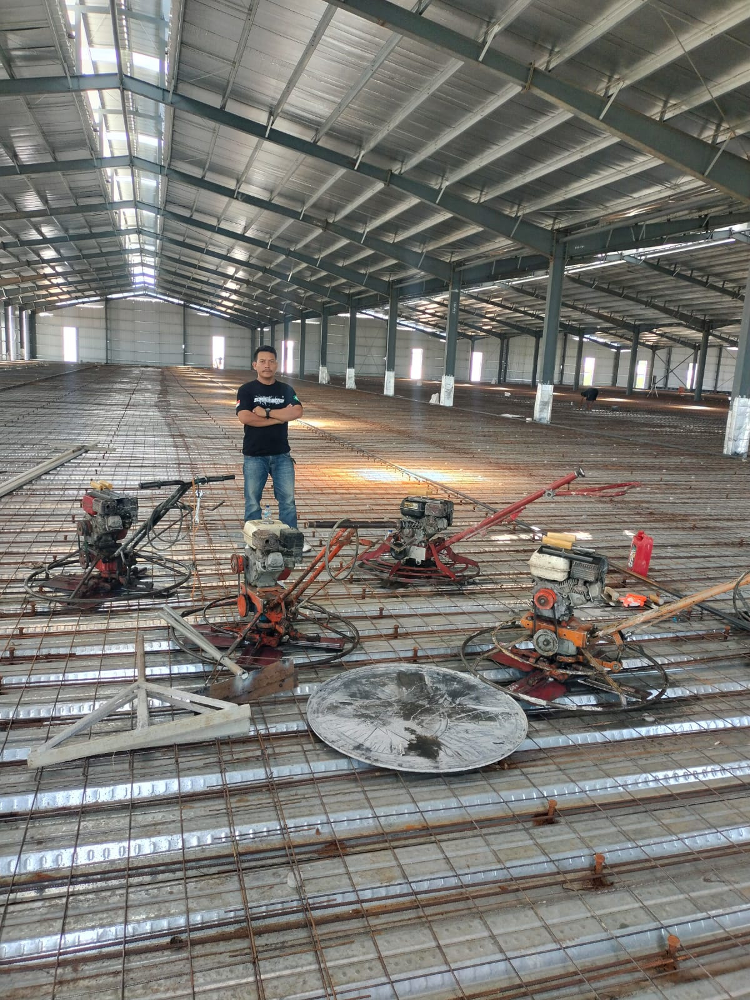
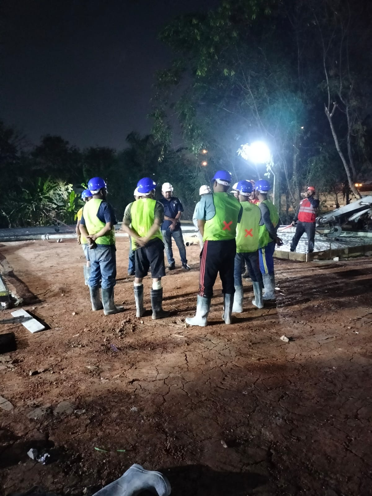
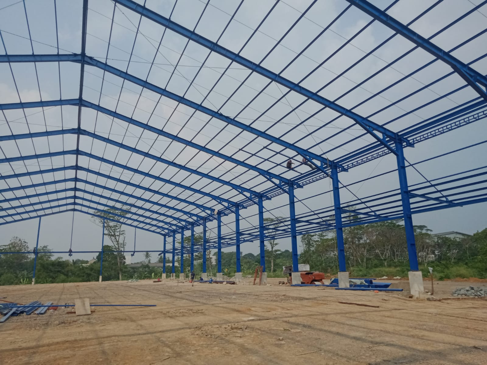
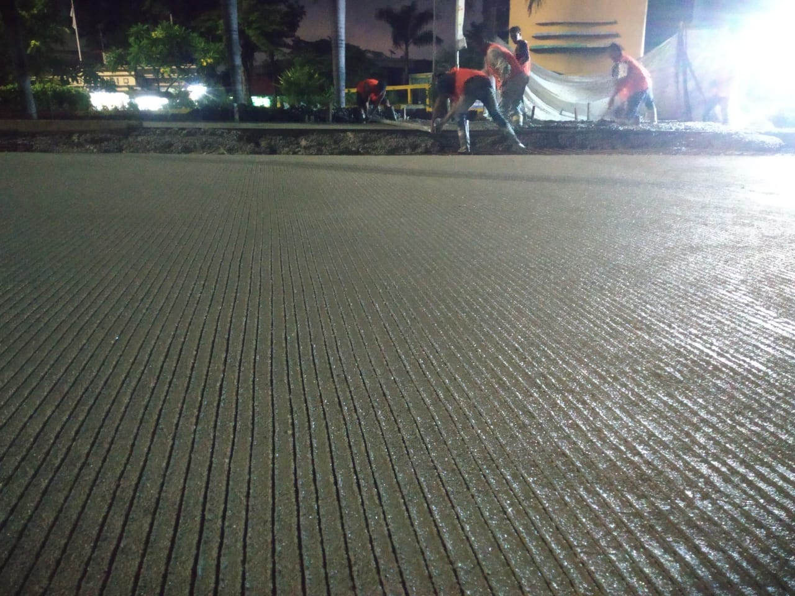
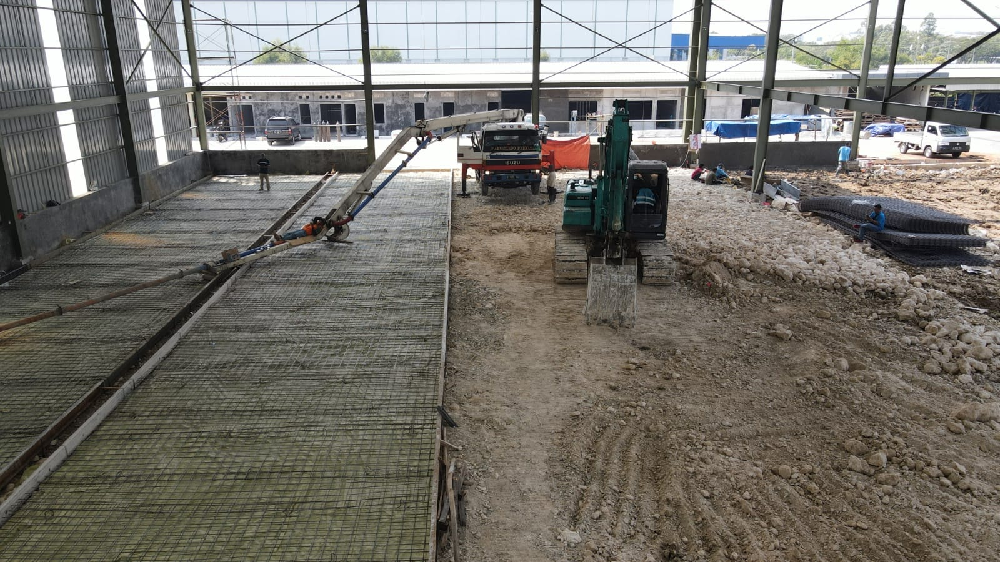
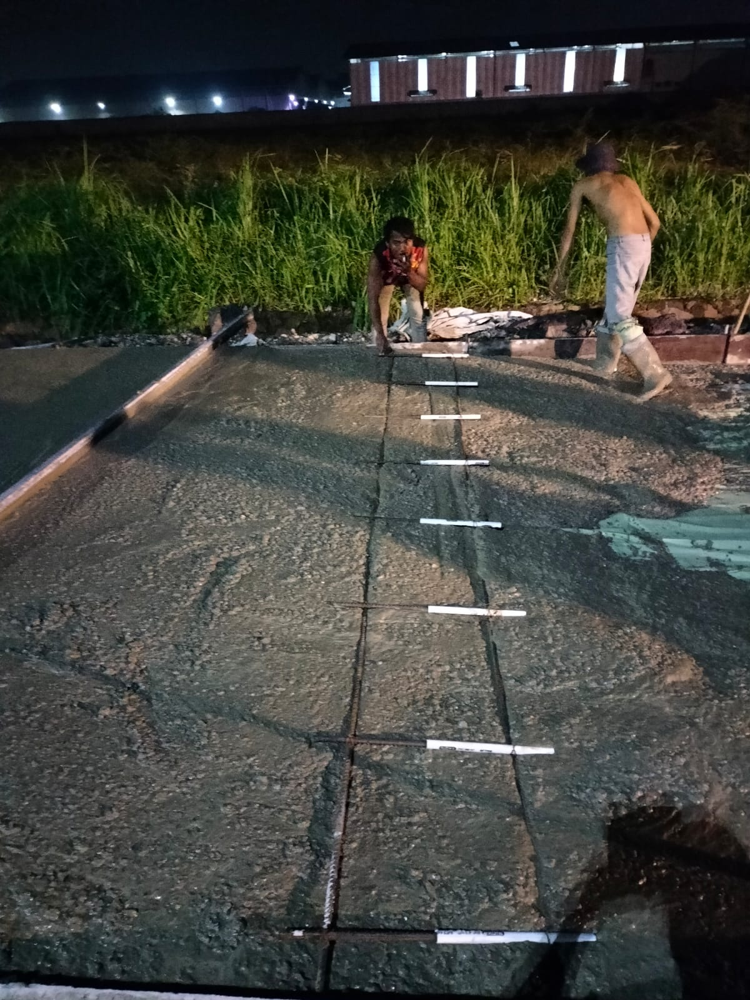
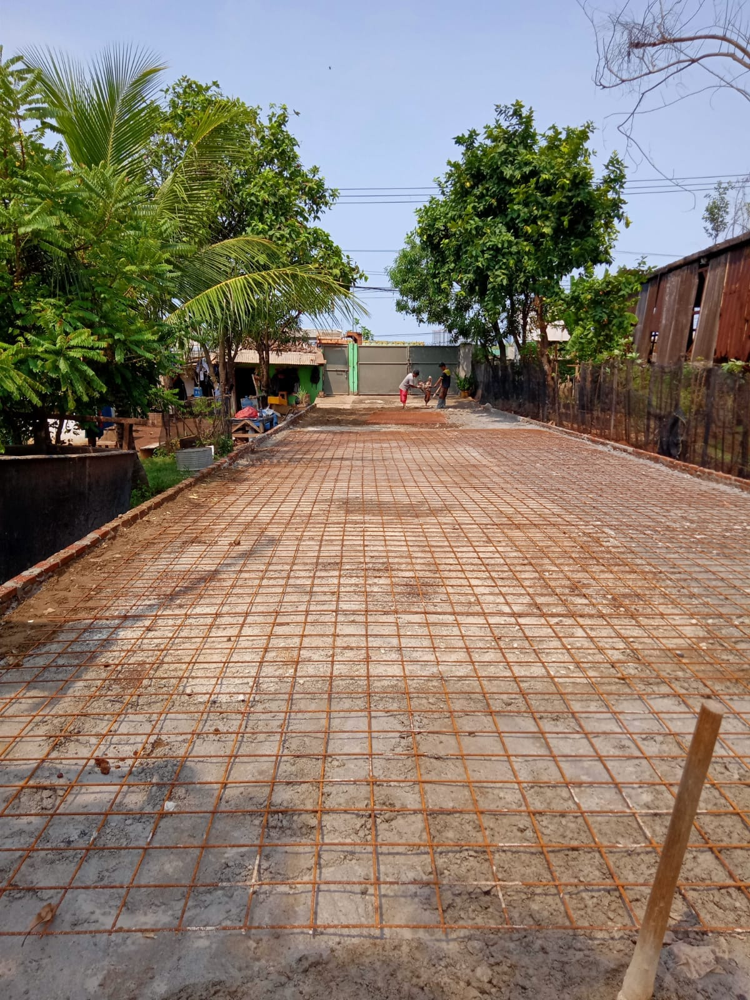
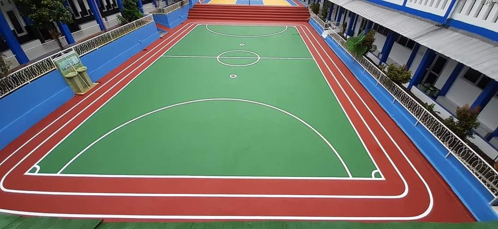

01
Jasa Gelar Cor Beton
Pekerjaan pengecoran untuk lantai gudang, bangunan, area parkir, dan fasilitas lainnya.
Tanya layanan →MITRA KONSTRUKSI ANDA
Solusi pekerjaan beton untuk gudang, pabrik, area parkir, jalan, dan berbagai kebutuhan proyek konstruksi.
TENTANG KAMI
Kami melayani pekerjaan pengecoran dan finishing lantai beton dengan mengutamakan perencanaan, kerapian, dan komunikasi yang jelas selama proyek berlangsung.
Pekerjaan direncanakan sesuai kebutuhan dan kondisi lokasi proyek.
Dari pengecoran hingga finishing, layanan dapat disesuaikan dengan proyek Anda.








KATALOG LAYANAN
Pilih layanan yang sesuai dengan kebutuhan lokasi dan spesifikasi proyek Anda.
Pekerjaan pengecoran untuk lantai gudang, bangunan, area parkir, dan fasilitas lainnya.
Tanya layanan →Finishing lantai beton untuk membantu menghasilkan permukaan yang rata dan tahan aus sesuai spesifikasi.
Tanya layanan →Pelapisan lantai untuk kebutuhan area kerja, komersial, dan industri sesuai kondisi permukaan.
Tanya layanan →Pemotongan sambungan beton dan pengisian sealant untuk kebutuhan sambungan lantai.
Tanya layanan →Pengecatan untuk membantu memberi tampilan rapi dan penanda area sesuai kebutuhan proyek.
Tanya layanan →Perawatan dan pemolesan permukaan beton untuk tampilan akhir yang lebih bersih dan menarik.
Tanya layanan →KONTAK
Hubungi kami untuk menanyakan layanan, estimasi kebutuhan, atau jadwal survei lokasi.
WhatsApp08211496244
Area layananjabodetabek banten jawa barat
EmailIsi alamat email bisnis Anda
Kirim pesan melalui WhatsApp untuk memulai pembicaraan tentang proyek Anda.
Chat WhatsApp Nomor WhatsApp pada tautan di atas masih contoh. Ganti sebelum website dipublikasikan.